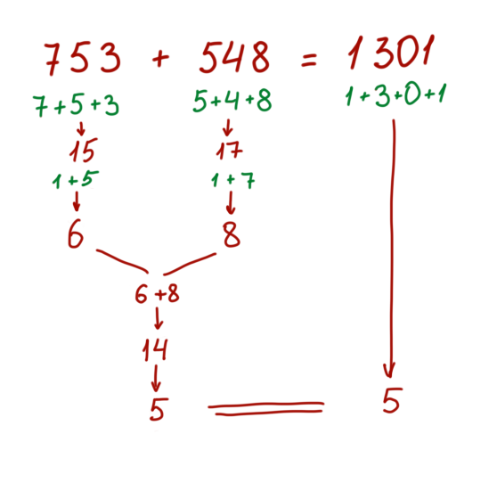
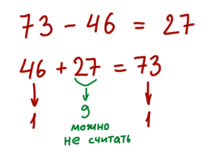
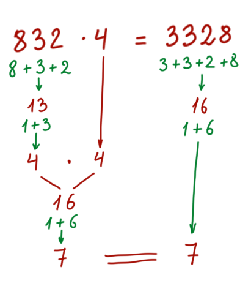

Есть простой способ проверить резултат вычислений: складываем все цифры в примере и все цифры результата, ответы должны совпасть:
Если какие-то цифры при складывании дают девятки, их можно вовсе не учитывать. В примере в числе 548 можно было отбросить 5 и 4 (которые в сумме дают девять), а оставшаяся восьмерка и даст сумму всех цифр этого числа.
Для проверки вычитания можно переписать пример, перекинув вычитаемое в другую часть:
С умножением и делением точно так же:
